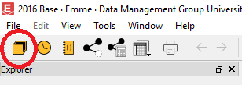
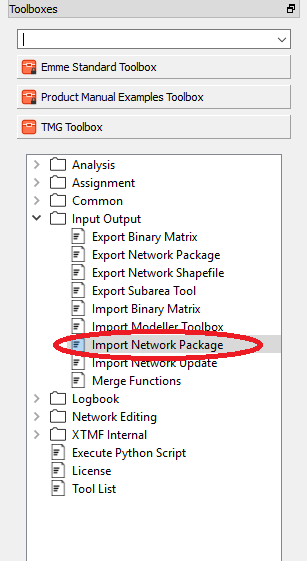
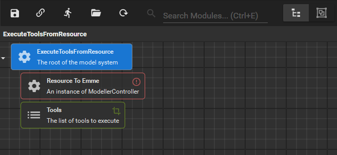
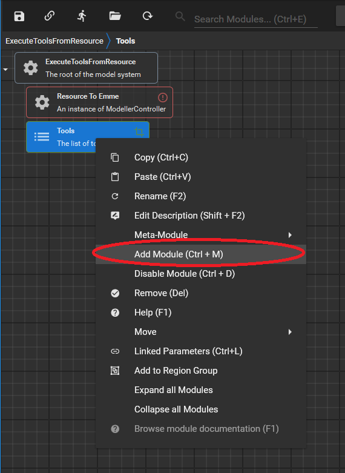
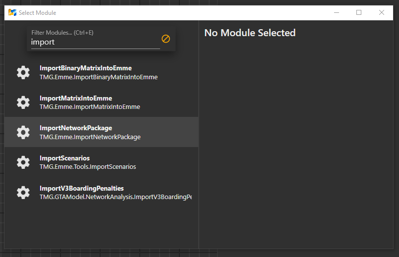

TMG Toolbox for Emme
Introduction
TMG Toolbox for Emme is a toolbox for the Emme V4 software. It is a collection of tools that build upon the modelling capabilities already present in Emme. TMG Toolbox has been designed for two uses
- Using Modeller to run tools in a direct manner. Not all tools support this as some are exclusively built for the second use case.
- Using XTMF (eXtensible Travel Modelling Framework) to call tools remotely as part of a reproducible workflow.
The first use is simple enough, the user selects the tool and the parameters on the Tool Page itself within Modeller.
The second use involved the use of XTMF to call the tool with the paramters that are specified in XTMF. This allows for Emme to be part of a larger workflow in terms of a Travel Model. For example: GTAModelV4 is an agent based travel demand model that builds daily schedules for agents and then assigns them using Emme and the TMGToolbox.
TMG Toolbox has seven categories:
- Analysis: Tools for analyzing networks, matrices, or model run results.
- Assignment: Tools for preparing and running road and transit assignments.
- Common: Libraries of smaller functions and helper classes.
- Input Output: Tools for loading and saving various data formats.
- Logbook: Tools for searching in Emme Logbook.
- Network Editing: Tools for performing automated network editing tasks.
- XTMF Internal: Tools which are designed only to be called by XTMF.
Adding the Toolbox
Adding the toolbox can be done in a number of ways. One way is given below. Note: Emme V4.3.7 is assumed. Older/newer versions may have differences.
- Open Emme Desktop
- Open Modeller
- On the bottom left side of the Modeller window click the option for "Add a toolbox..."
- Click the "Browse..." button beside the "Path" parameter and browse to the location of TMGToolbox
- The "Title" and "Namespace" parameters should auto fill when TMG Toolbox is selected. If for any reason they are not, the "Title" should be "TMG Toolbox" and the "Namespace" should be "tmg".
- Press "Ok"
- Close Modeller
- On Emme Desktop, press "File" at the top left, followed by " Save Project Settings"
Opening the Tool with Modeller
Open Emme Modeller
Navigate to TMG Toolbox

Open the Tool

Opening the Tool with XTMF
Open XTMF and Create a Model System
Add a Module
Search and Select the Module
